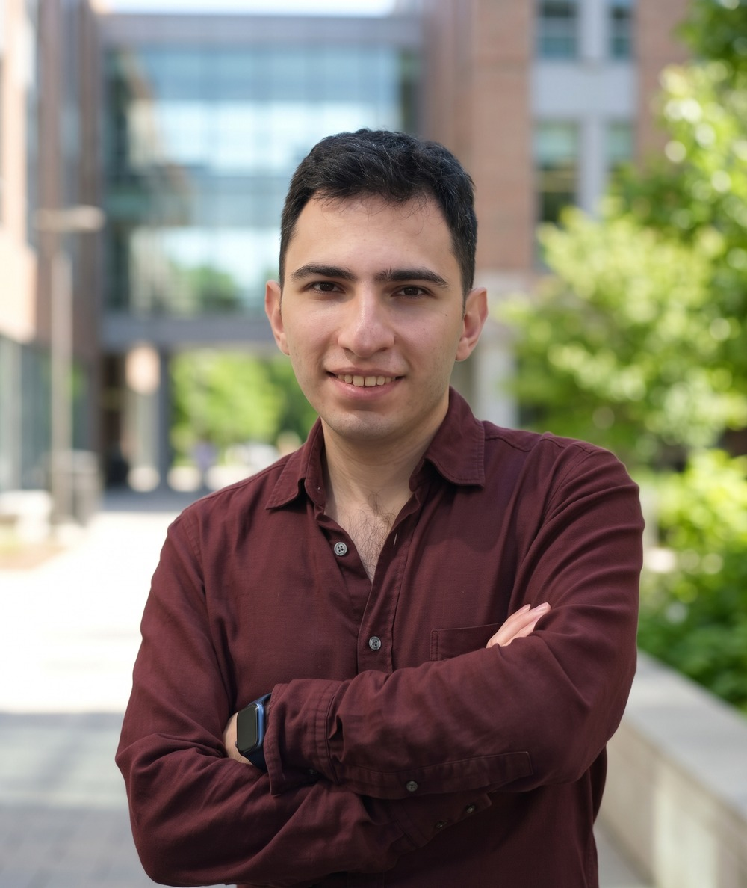

2025 · 04
PhD candidate · Computer Science · Paris, France · Expected graduation Dec. 2027
Hovhannes Margaryan
I am a PhD candidate in Computer Science at Université Paris-Saclay, supervised by Prof. Vicky Kalogeiton, Prof. Quentin Bammey, and Prof. Christian Sandor. Previously, I was an Applied Research Scientist at Picsart AI Research (PAIR).
My research focuses on real-time video generation and editing using autoregressive diffusion and flow matching models. I am also interested in controllable video generation, interactive visual editing, and world models.

News
Recognized as a Top Reviewer at NeurIPS 2026.
AR-Edit: Training-Free Streaming Video Editing without Inversion; accepted at NeurIPS 2026.
FlowC2S; fast, memory-efficient video continuation; accepted to CVPR Findings 2026.
PEO, training-free aesthetic quality enhancement for text-to-image diffusion, is out on arXiv.
Gave a talk at ENPC (IMAGINE team) on text-to-video generation, stream synthesis, and editing.
Participated in the ELIAS–ELLIS–VISMAC Winter School in Brunico, Italy.
Started my PhD at Université Paris-Saclay.
DGBD, depth-guided branched diffusion for multi-view generation, accepted at CVPR Workshops 2024.
Publications
Talks
2022 · 09
Academic service
Reviewer
CVIU · NeurIPS 2026 (Top Reviewer)
Experience
2019 — 2024
Applied Research Scientist
Picsart AI Research (PAIR) · Yerevan, Armenia
Research and production work on generative imaging: controllable multi-view generation, personalized text-to-image models, and on-device creative effects for ~150M monthly users.
details
- Authored a first-author paper on controllable multi-view generation with diffusion models (DGBD).
- Co-developed personalized text-to-image diffusion models for production features (e.g., AI Avatar Generator).
- Built plug-and-play text-to-image pipelines for in-app effects (e.g., Infinite Loop Effect at 4K resolution).
- Developed facial inpainting models (Smile Effect, Wrinkle Generation) shipped in the Retouch section of the Picsart app (~150M monthly active users).
- Built a controllable C++ image outpainting solution for mobile, handling up to 4K images in 1.5 to 5 seconds.
- Compressed production models (e.g., Sketch Effect) up to 3× with post-training and quantization.
Education
Oct. 2024 – Dec. 2027
(expected)
(expected)
Ph.D. in Computer Science
Université Paris-Saclay · Paris, France
Thesis: Enabling Subtle Visual Modifications with Augmented Reality and Artificial Intelligence
Advisors: Prof. Vicky Kalogeiton, Prof. Quentin Bammey, Prof. Christian Sandor
Sept. 2021 – Jul. 2024
M.Sc. in Statistics and Data Science
KU Leuven · Leuven, Belgium
Thesis: Aesthetic Quality Enhancement in Text-to-Image Models (PEO)
Advisors: Dr. Bo Wan, Prof. Tinne Tuytelaars
Aug. 2015 – May 2019
B.S. in Computer Science
American University of Armenia · Yerevan, Armenia
Thesis: Autoregressive GAN for time series forecasting. Project
Advisor: Arnak Poghosyan
Schools & seminars
Jan. 2025
ELIAS–ELLIS–VISMAC Winter School
elias-ai.eu · Brunico, Italy
Led a team exploring test-time compute approaches to improve LMM performance on NaturalBench. presentation ↗
Mar. – June 2021
Scientific Seminar on Computer Vision
TU Wien · Vienna, Austria
Reviewed SOTA human pose transfer methods and wrote a comparative analysis paper. paper ↗